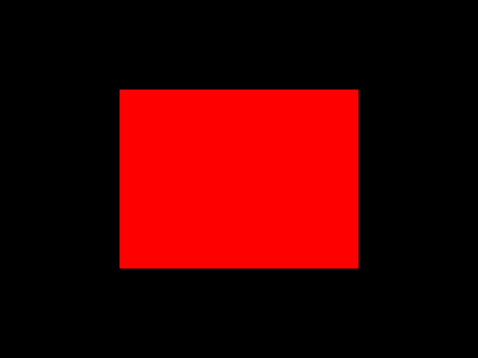

Draw a gradient-filled rectangle with custom vertex colors.
See also
Other ex functions:
draw_cylinder_ex(),
draw_cylinder_wires_ex(),
draw_line_ex(),
draw_model_ex(),
draw_model_wires_ex(),
draw_poly_lines_ex(),
draw_rectangle_lines_ex(),
draw_rectangle_rounded_lines_ex(),
draw_sphere_ex(),
draw_text_ex(),
draw_texture_ex(),
get_directory_file_count_ex(),
get_screen_to_world_ray_ex(),
get_world_to_screen_ex(),
image_text_ex(),
measure_text_ex(),
update_model_animation_ex()
Other rectangle functions:
draw_rectangle(),
draw_rectangle_gradient_h(),
draw_rectangle_gradient_v(),
draw_rectangle_lines(),
draw_rectangle_lines_ex(),
draw_rectangle_pro(),
draw_rectangle_rec(),
draw_rectangle_rounded(),
draw_rectangle_rounded_lines(),
draw_rectangle_rounded_lines_ex(),
draw_rectangle_v(),
get_shapes_texture_rectangle(),
rectangle()
Other draw functions:
draw_billboard(),
draw_billboard_pro(),
draw_billboard_rec(),
draw_bounding_box(),
draw_capsule(),
draw_capsule_wires(),
draw_circle(),
draw_circle_3d(),
draw_circle_gradient(),
draw_circle_lines(),
draw_circle_lines_v(),
draw_circle_sector(),
draw_circle_sector_lines(),
draw_circle_v(),
draw_cube(),
draw_cube_v(),
draw_cube_wires(),
draw_cube_wires_v(),
draw_cylinder(),
draw_cylinder_ex(),
draw_cylinder_wires(),
draw_cylinder_wires_ex(),
draw_ellipse(),
draw_ellipse_lines(),
draw_ellipse_lines_v(),
draw_ellipse_v(),
draw_fps(),
draw_grid(),
draw_line(),
draw_line_3d(),
draw_line_bezier(),
draw_line_dashed(),
draw_line_ex(),
draw_line_strip(),
draw_line_v(),
draw_mesh(),
draw_mesh_instanced(),
draw_model(),
draw_model_ex(),
draw_model_wires(),
draw_model_wires_ex(),
draw_pixel(),
draw_pixel_v(),
draw_plane(),
draw_point_3d(),
draw_poly(),
draw_poly_lines(),
draw_poly_lines_ex(),
draw_ray(),
draw_rectangle(),
draw_rectangle_gradient_h(),
draw_rectangle_gradient_v(),
draw_rectangle_lines(),
draw_rectangle_lines_ex(),
draw_rectangle_pro(),
draw_rectangle_rec(),
draw_rectangle_rounded(),
draw_rectangle_rounded_lines(),
draw_rectangle_rounded_lines_ex(),
draw_rectangle_v(),
draw_ring(),
draw_ring_lines(),
draw_sphere(),
draw_sphere_ex(),
draw_sphere_wires(),
draw_spline_basis(),
draw_spline_bezier_cubic(),
draw_spline_bezier_quadratic(),
draw_spline_catmull_rom(),
draw_spline_linear(),
draw_spline_segment_basis(),
draw_spline_segment_bezier_cubic(),
draw_spline_segment_bezier_quadratic(),
draw_spline_segment_catmull_rom(),
draw_spline_segment_linear(),
draw_text(),
draw_text_codepoint(),
draw_text_ex(),
draw_text_pro(),
draw_texture(),
draw_texture_ex(),
draw_texture_n_patch(),
draw_texture_pro(),
draw_texture_rec(),
draw_texture_v(),
draw_triangle(),
draw_triangle_3d(),
draw_triangle_fan(),
draw_triangle_lines(),
draw_triangle_strip(),
draw_triangle_strip_3d()
Examples
raylibr_screenshot(function() draw_rectangle_gradient_ex(rectangle(100, 75, 200, 150), "red", "red", "red", "red"))
